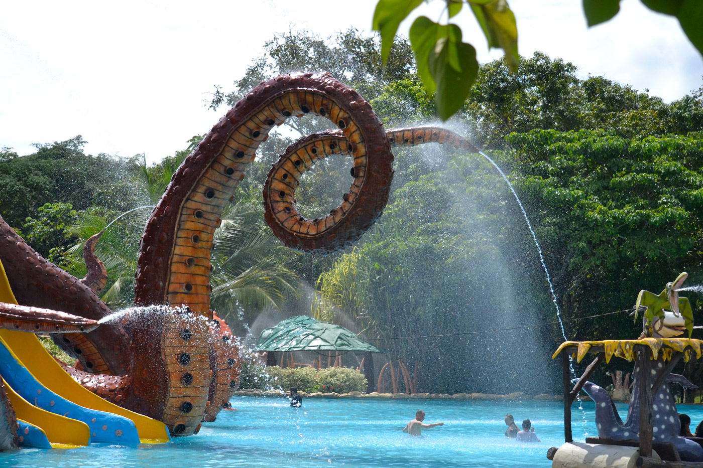
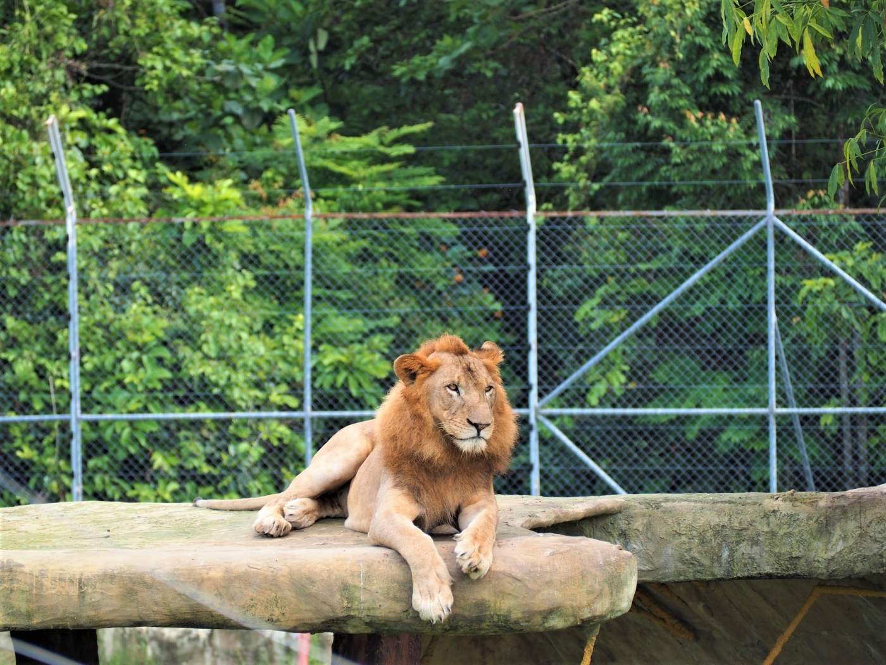
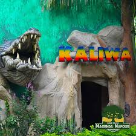

Este parque contiene Agua, agua, agua en cantidades impresionantes. Cientos de miles de litros de agua en un parque especial para toda la familia. Toboganes, circuitos refrescantes en medio de cortinas de agua, nebulizadores, charcos y una enorme cascada lanzada desde diez metros de altura. Un lugar con la mejor tecnología y un sitio ideal para tomar fotografías y conservar los mejores y más refrescantes recuerdos de su visita a nuestro parque, con sonidos de fondo de grandes animales prehistóricos.
Las atracciones del Parque Temático Hacienda Nápoles se empezaron a construir a mediados de 2007, con la recuperación de las réplicas de algunos dinosaurios y la construcción de otros, para crear una mediana zona de tránsito llamada Jurásico, que se complementaba con el diseño y ejecución de las obras complementarias al lago donde se encontraba la manada de hipopótamos, únicos animales que sobrevivieron a la época pasada del lugar, y clasificada como la más grande manada de estos animales que vive por fuera de África.
Poco a poco este lugar contendrá todos los grandes tesoros de la humanidad, esos que nos han permitido tener vida, historia, familia, sociedad y hasta los juguetes y los alimentos con los cuales hacemos más amables nuestro diario vivir. En pocos meses, todo este gran espacio será convertido en unos bellos parques donde podrás aprender muchas cosas asombrosas sobre la vida diaria, sobre esas pequeñas cosas que a veces, de tanto usarlas, no valoramos en su importancia
